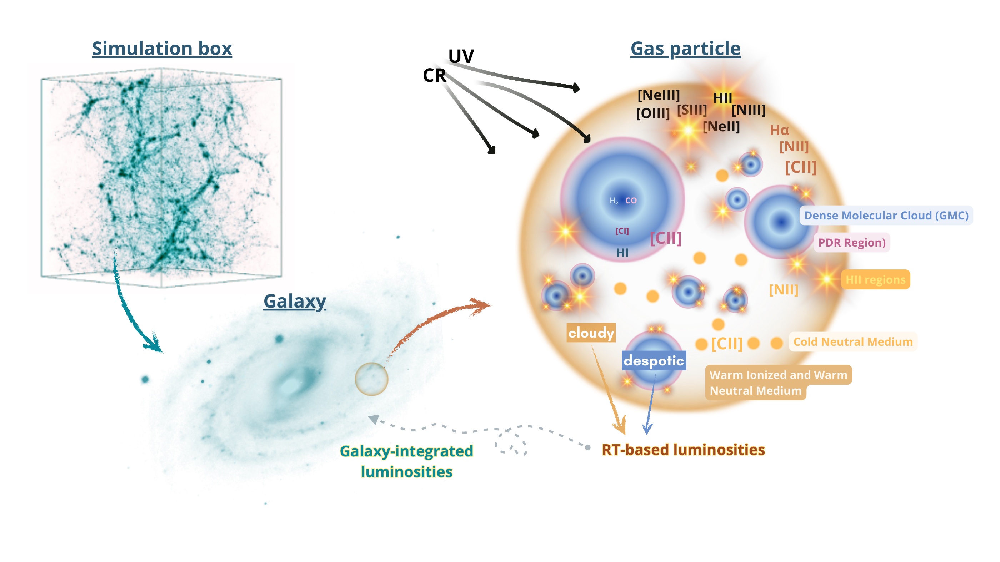

Line-Intensity Mapping
Predicting the collective emission of galaxies and understanding how astrophysics shapes intensity maps and power spectra.
Explore SLICK for LIM →← SLICK overview · All research
What if we could predict how galaxies emit light across cosmic time without prescribing their line luminosities through empirical galaxy-wide scaling relations?
I developed SLICK to connect the physical conditions of gas in cosmological hydrodynamical simulations to molecular and atomic line emission. By linking unresolved interstellar medium (ISM) physics to simulated galaxy populations, SLICK lets us investigate how gas conditions shape observable emission, how different tracers respond to physical changes, and how those signatures evolve across cosmic time.
More broadly, the goal is to test how galaxy-formation physics becomes observable: how changes in density, metallicity, radiation fields, and the simulated galaxy population propagate into predictions for line luminosities and, ultimately, cosmological surveys.
Cosmological simulations follow the formation of galaxies over billions of years, but the chemistry, thermal balance, and radiation transport that govern many emission lines occur below their resolved scales. Empirical luminosity prescriptions can be valuable for forecasts, yet they make it harder to isolate how a change in the underlying gas physics affects the signal.
SLICK addresses this gap with physically motivated subgrid gas models and line-emission calculations. It is not free of empirical assumptions—some unresolved ingredients still require prescriptions—but it offers a modular route from simulated gas properties to observables, rather than assigning all line luminosities from global galaxy properties alone.
Starting from cosmological simulations, SLICK models unresolved gas structures and their thermal, chemical, and radiative environments. Tools such as DESPOTIC and Cloudy are used to compute line emission from modeled components, which can then be combined into galaxy-level predictions. The schematic below illustrates the modeling logic and the multiphase extensions under development.

The published SLICK framework predicts molecular emission such as CO, while ongoing SLICK-2 developments extend the treatment to a broader set of atomic and ionized-gas tracers, including [C I], [C II], [N II], and [O III]. Studying multiple lines within a consistent framework helps connect their different physical origins.
Different lines trace different combinations of molecular, neutral, and ionized gas. By modeling these components separately, SLICK-2 is being developed to investigate which gas phases contribute to each signal and how those contributions vary with environment.
Applied to simulated galaxies at different redshifts, SLICK can be used to study trends in line luminosities, line ratios, and luminosity functions, and to explore how they respond to changes in the physical conditions of galaxies.
Because the calculations can be connected to cosmological simulation populations, the framework also provides a foundation for predicting collective line emission, with applications to intensity mapping and the interpretation of large-scale structure measurements.
My current research develops SLICK as a flexible foundation for several complementary questions: how to interpret line-intensity maps, how active galactic nuclei influence emitting gas, and how uncertainties in galaxy-formation models affect observational predictions.
Predicting the collective emission of galaxies and understanding how astrophysics shapes intensity maps and power spectra.
Explore SLICK for LIM →Tracing the imprint of black-hole radiation on gas conditions and atomic and molecular line diagnostics.
Explore SLICK for AGN →Connecting uncertain galaxy-formation prescriptions to observable line emission across simulation models.
Explore SLICK + CAMELS →These pages describe both demonstrated capabilities and ongoing research directions; proposed applications are identified as such.